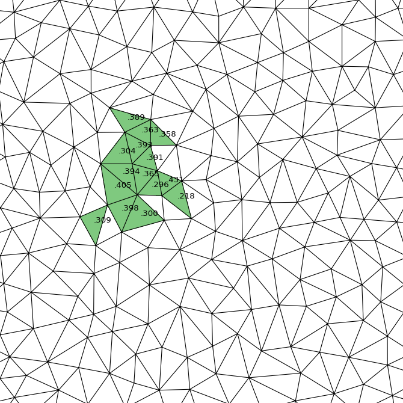
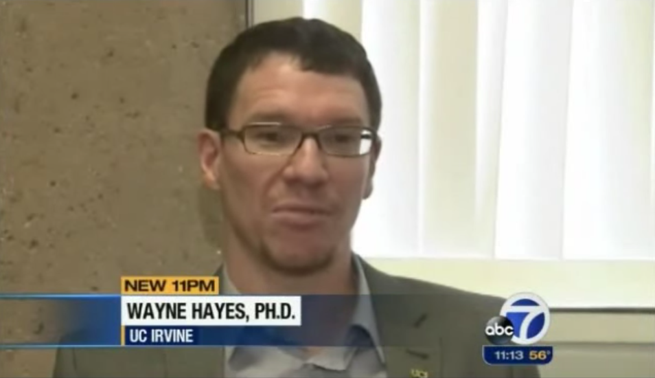

Mapping Global Warming
ISSM, or Ice Sheet System Model is a collaboration between NASA and UCI. It's purpose is to map the surface of ice caps in Greenland & Antarctica with the goal of proving or disproving the effects of global warming.
My task was to create a visualization tool for our data –– the height of ice as measured by helicopter patrol –– and its triangulation. I implemented a program with three key features: zooming, region highlighting, and information toggling. I wrote my program in Python using a plotting library called Matplotlib
Topics
Personal Growth
- Algorithms
- Up-The-Hierarchy Communication

About
It was my second year, just before Spring quarter, and I had been looking around for some opportunities to do research at UCI. I asked one of my Computer Science professors –– the notorious Dr. Pattis –– about it, and although he wasn't looking for student researchers, he did introduce me to somebody who was. So I gave him a visit to see what kind of research he was looking for.

He's a pretty great guy. I joined a bit late, but he told me it wasn't a problem. He had been working on three concurrent projects:
- Astronomy
- Global Warming
- Biology
I chose to work on the Global Warming project because I already had most of the experience required for that kind of work. Then he hooked me up with a researcher at NASA who eventually gave me the specifications for the program I would be making.
This research was actually supposed to be a two person job. I was supposed to have teammate –– whose name I will not reveal –– but the professor and I lost contact with him for the entire project. Funny thing is, I forgot he even existed until I looked back on my emails. I still did got the job done though, albeit with a few extra all-nighters.